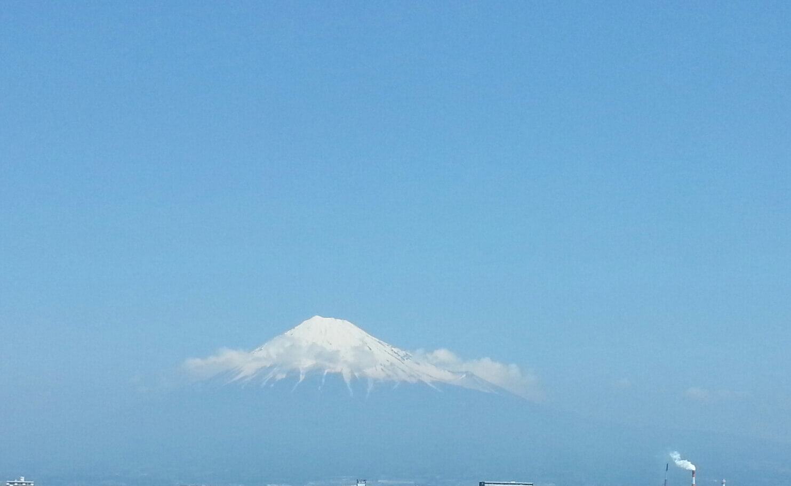
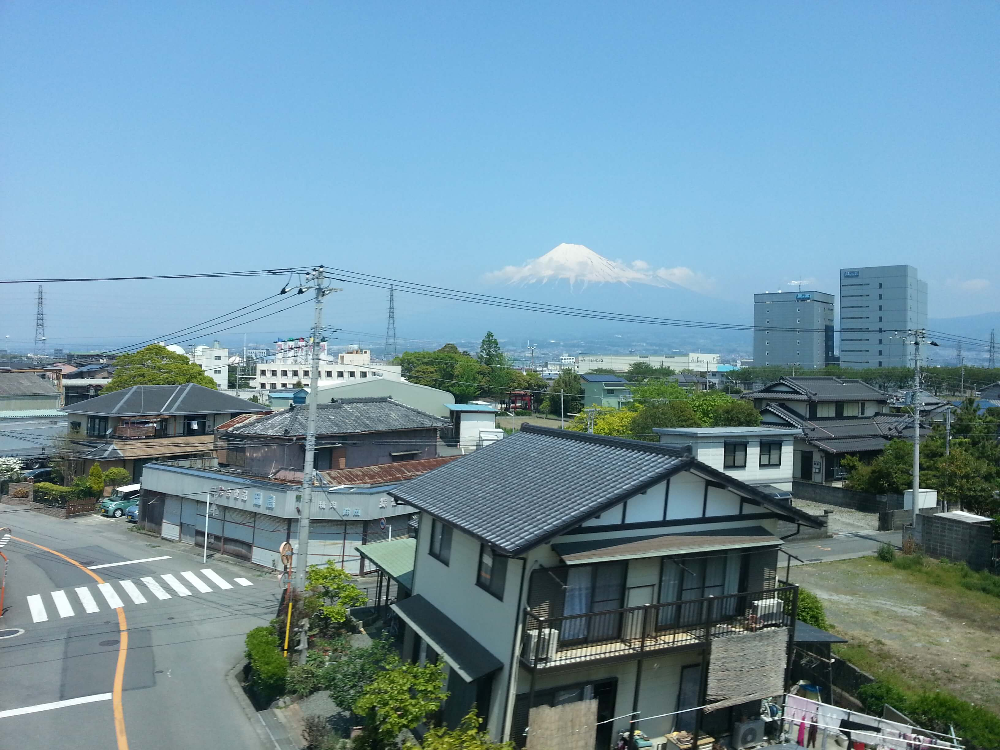

Will come back to add the amzing pictures
 
Japan is a land of such intense vibrant culture deeply rooted in its history and grows through its diverse society. A nation forged in art and honor, defended by the respect and politeness of its people. Tokyo is a land of concrete, seen from the highest tower, is grey reaching onto the horizon speckled with deep greens of inner city forests. Every turn from the futuristic wide stretch opened streets of skyscrapers is into the cobblestone laid paths to shrines and markets. Every twenty steps there is a vending machine serving a drink for your meal of choice from another vending machine ten feet away. Every doorstep, window, or open space was immediately filled with a herb, bush or flower. Every man wore a black suit, white shirt, black tie and every women a black dress and white shirt. All were well reserved, please and thank you, hello, never without a smile. However, one turn might take you into a cafe where cats are allowed free roam over humans as you drink your beverage. Interestingly, the cats were treated like gods and no one is aloud to pet the cats unless the they come to you and only after you wear special shoe covers. Japan’s society ranges so diversely from both sides of the spectrum, where its underground is almost frightening to take the wrong step in the wrong part of town, to the weirdest commercials and tv shows you will ever see. Atmosphere is a huge basis of the Japanese culture. Music, architecture, landscape, almost any aspect thinkable is taken into mind when designing an event, meal, building, or project. Glancing over a building will leave a chilling effect of comfort as your subconscious consumes and digests the minute details put on every corner. Within Tokyo the flat land of endless high rises and skyscrapers is the Imperial garden. However, this garden was more of a large forest than a simple garden. Some who enter even get lost, but everyone who enters always gets lost in the peaceful serenity and lose the perception of being in the middle of one of the largest cities in the world. Every city or town had wonderful public gardens and open parks. In which they value the life of everything. Shintoism is a very large part of Japanese life and is the connection of all life in nature. They find Koi very spiritual and sacred and do not remove them from the pond after hundreds of years. What seems simply sacred and unrelated of keeping Koi safe is an experience I will never forget. A little girl had a piece of bread and was at the side of a large pond sitting under the shade of a tree. She threw a piece of bread in and what emerged opened my eyes ten fold as a massive swarm of orange and black from the water. A blob of orange yellow and black almost 35 feet in radius pushed up through the pond to the point where some Koi were standing out of the water walking on a ground of Koi.
Kyoto’s society changed as it did its people. A city based in the heart of a valley surrounded by large overcasting hills. Seen from above are the rich reds, greens, and blues of architecture. The city's people consisted of artists, musicians, artisan chefs, entrepreneurs, and street actors. Suits and black dresses were nowhere to be seen. The only major way in or out of the city is a train station serving constant bullet trains. Every step from the city leads from a dense grouping of high rises to the sprawling city of exquisite small homes, estates, and restaurants. All of which complemented the old palaces, shrines, monasteries, and pagodas that populated the area. The further you went into the surrounding hills, the more shrines and palaces were open to the public to overview the city. Of the which a buddhist monastery on almost the face of a mountain raised an assortment of long colored sheets on the side of the mountain leading to a small lake in the mountains. Traveling through a sand garden led to the entrance of the lake with a perfect view of the city, and at the center of the lake there was an ancient pagoda with two third of the architecture completely made of gold. No matter where you traveled in Japan, if you are from America, six foot two, blonde and speak english you immediately stand out. Students from other schools ranging from PreSchool to High School would always go on fieldtrips to major cities we visited, and with such a large population there were always a group of students in major historical parts. All the small children ages six through eight had to wear the same hat if they were from the same school and they traveled in packs. I would wave to entire group of fifty kids and the would all wave back and say hello, because they learn basic english and other languages in kindergarten. High School kids would come up to me and shake my hand with such enthusiasm, I felt like I was going to be diagnosed with arthritis. They would all ask for a picture and I would pose in front of two to twenty kids making the peace sign with my hand to take a picture.
Interesting fact, the plaque recognising the epicenter of the atomic bomb in Hiroshima, the release of the first atomic bomb, the point where the world entered the modern age and a cold war, one of the most significant moments in history, is at the base of a parking garage. However, the museum and memorial, a quarter of a mile away is outstandingly beautiful. My favorite memorial anywhere is Hiroshima recognizing the children who died of cancer. From a distance I recognized beautiful paintings in glass cases surrounding a giant monument. However, at a closer glance from a few feet each of the hundreds of large paintings and 3d designs were each made of thousands of tiny paper cranes. There were over a million paper cranes made from school children over the course of years. The interaction between anyone was always a pleasant experience leaving you with a new joy with life.
One’s palate is tested to the extreme by overflowing the senses with fresh flavors from the corners of the world with fresh ingredients. From markets the ingredients are gathered that morning, meat slaughtered in front of your eyes, and fish of your choice from a tank. Green tea tea, green tea coffee, green tea rice, green tea kit kats, green tea candy, green tea clothes, green tea addiction. There were malls as big as American shopping centers solely dedicated to fresh bread. Their markets stretched miles of fresh cuisine and edibles which is an almost inexplicable view and taste of momentous amounts of food intertwining. Since fresh ingredients are so valued the government subsidises the freshest food unlike America which subsidies the most unhealthy and least fresh food, every food source was cheap. More influential was that there are so many restaurants and markets, there were so many tastes to be eaten freely. On our second day in Tokyo, we walked into one of the highest skyscrapers in Japan, went into an elevator three feet by three feet and traveled to one of the highest levels. There, we walked into a restaurant without reservations and got a party box overlooking the city and had an amazing three course meal for twelve dollars a person. However, the best part was getting a party box and receiving privacy. After an eighteen hour flight of no sleep and landing in a completely shifted timezone of fourteen hours I had not sleeping in almost two and half days. The tiredness always hits you on the second day intensely and fast to the point where half way though the last course of the meal, I said, “Sorry,” and my head dropped straight onto the table.
Three days of my travels were spent on the once sacred island of Miyajima. This island was once declared sacred and only allowed to the one percent. Once you could only enter through a massive red Torii gate to the island, a symbol of passing through worlds. Like the Koi fish, deer were kept sacred. The first thing I noticed was how fat these deer were when I stepped foot on the island. We were greeted by a massive sign with rules and regulations of the island, but the English was so butchered that it stated, “ Don’t let the deer eat you” or “Don't feed your hand to deer”. However, on this island I got to see the largest rice paddle in the world, see a cliff side castle(of which the many castles I saw in Japan), and a Buddhist monastery over the water. At any shrine or monastery there was always a vending machine vending Haagen Dazs ice cream and because of laws and regulations regarding food; it was all natural. I would sit down on a bench at the top of the beach overlooking the large Torii Gate and across the river to vibrant lights of the mainland, eating my Haagen Dazs cookies and cream, until, a deer came up to me and stared me into eyes and sat down on its hind legs like a dog. The deer continued to lay its head unto my lap as I started to pet its head. However, after a few minute the deer started to lick the spoon out of the cup of ice cream.
More to come later....